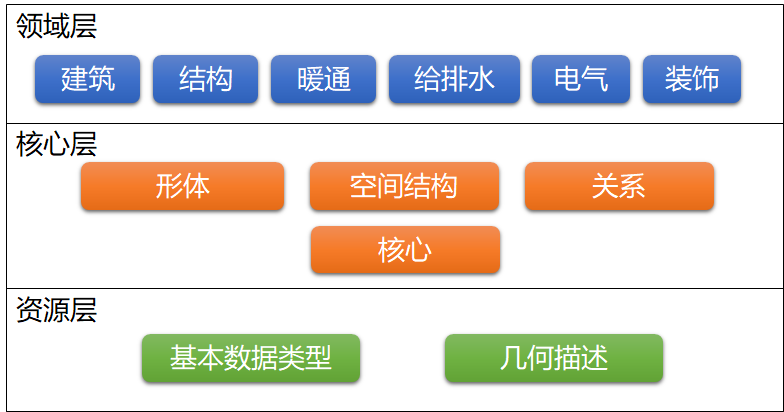

简介
GFC全称为：Glodon Foundation Classes，是广联达算量数据交换标准。用于算量数据在建筑物建设或设施管理项目中的各种参与者之间交换和共享。
本文件包含GFC标准的规范，该规范由EXPRESS语言来描述。
GFC规范包括术语、概念和数据规范项，这些术语、概念和数据规范项源于建筑预算行业。术语和概念使用纯英语单词，数据规范中的数据项遵循命名约定：
- 类型、实体、规则和函数的数据项名称以前缀“Gfc2”开头，并在驼峰式命名约定中继续使用英语单词（无下划线，大写单词中的第一个字母）；
- 实体内的属性名遵循驼峰式命名约定，不带前缀；
- 枚举项应为大写，英语单词间用下划线分隔。
GFC的数据体系结构定义了三个概念层，如下图所示：

- 资源层 — 最低层包括所有资源定义，如：几何描述、基本数据类型等，这些定义不包括全局唯一标识符，并且不应独立于在较高层声明的定义使用；
- 核心层 — 下一层包括核心实体定义，如：项目结构、构件实体、空间划分等，以及核心扩展模式，如：对象、属性和关系定义等。核心层或以上定义的所有实体都带有全局唯一标识符；
- 领域层 — 最高层包括的实体定义是特定于某个规程的产品、流程或资源的专门化，这些定义通常用于领域内交换和共享信息。